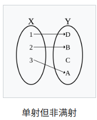
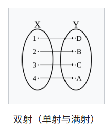
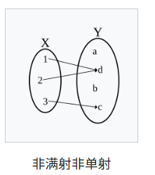

Functions in Z
Function
函数：
- 特殊的关系，一对一或多对一
- 定义域有限的函数也叫映射（mapping）
- 写法：f: X +\(\rightarrow\) Y（从 X 到 Y 的函数）
- 当 x \(\in\) dom f 且最多只对应一个 y 时，其等价于关系 f: X \(\leftrightarrow\) Y x \(\in\) dom f \(\Rightarrow\) \(\exist_1\)y: Y · x f y
Function application
函数应用：
Partial functions
部分函数 Partial functions：
- source 不全在 domain 中（source > domain）
Total functions
全函数 Total functions：
- source 全在 domain 中（source ≤ domain）确保了函数的每一个输入都有输出，没有遗漏。
- 部分函数加上 dom f = X 的约束
- 写作：f: X \(\rightarrow\) Y
-
- 全函数只要求每个输入都有输出，不要求输出的唯一性。单射要求每个输入映射到不同的输出，但不要求每个输入都有输出。
Injection
单射 Injection：

Surjection
满射 Surjection：
- range 是整个 target
- 部分函数：f: X +\(\rightarrow\)> Y
- 全函数：f: X \(\rightarrow\)>Y

Bijection
双射 Bijection：
- 单射+满射
- f: X >\(\rightarrow\)> Y

非满射非单射

Overriding
函数重写 Overriding：
- 指定函数定义域的子集，在对应的值域赋予新的值
- f: X +\(\rightarrow\) Y g: X +\(\rightarrow\) Y f 被 g 重写为新的函数 f \(\oplus\) g：
- f \(\oplus\) g == (dom g \(Domain subtraction\) f) \(\cup\) g（g的定义域去除掉 dom f，再并上 g）
- 当 x 在 f 的定义域中而不在 g 的定义域中时，f \(\oplus\) g x = f x
- 当 x 在 g 的定义域中时，f \(\oplus\) g x = g x
* 举例：使用函数描述存货控制
Example: Using Functions to Describe stock Control
| [ITEM] 所有物品种类的集合
仓库 (state)
|-- Warehouse ---------
| carried: PITEM 拿的物品 是子集
| level: ITEM +-> N 级别 物品到自然数的函数
|-----------------------
| dom level = carried 拿的物品是级别的定义域
|-----------------------
初始化 (init)
|-- Init -----------
| Warehouse' 下一状态
|---------------------
| carried' = \Phi 空集
| dom level' = \Phi 空集
|---------------------
拿一个新物品 (operation)
|-- CarryNewItem ----------------
| \Delta Warehouse 仓库状态改变
| i? : ITEM 输入物品
|---------------------------------
| i? \not\in carried 约束 输入的物品没拿
| level' = level \cup {(i?, 0)} 更新级别函数 输入的物品级别被初始化为 0
| carried' = carried \cup {i?} 将输入的物品加入拿到的物品中
|---------------------------------
运输 (operation)
(运输操作 Deliver 用于更新已经拿到的物品的级别。具体来说，将指定物品的级别增加一个给定的正自然数，而被拿的物品集合保持不变。)
|-- Deliver ------------------------------------
| \Delta Warehouse 仓库状态改变
| i? : ITEM 输入物品
| qty? : N_1 输入新的级别
|--------------------------------------------------
| i? \in carried 约束 i 已经被拿到
| level' = level \oplus {(i?, (level i? + qty?))} 更新 i 的 level
| carried' = carried 拿到的物品不变
|--------------------------------------------------
取回 (operation)（撤回Deliver操作）
|-- Withdraw -----------------------------------
| \Delta Warehouse 仓库状态改变
| i? : ITEM 输入物品
| qty? : N_1
|--------------------------------------------------
| i? \in carried 约束 i 已经被拿到
| level i? >= qty? 约束 i 的 level 要比输入的 qty 大
| level' = level \oplus {(i?, (level i? - qty?))} 更新 i 的 level
| carried' = carried 拿到的物品不变
|--------------------------------------------------
中止物品 (operation)
（中止物品操作 DiscontinueItem 用于处理已经拿到的物品，并且其级别为 0 的情况。具体来说分两步：从被拿的物品集合中移除该物品； 从级别函数的定义域中移除该物品，即不再跟踪该物品的级别）
|-- DiscontinueItem -------
| \Delta Warehouse 仓库状态改变
| i? : ITEM 输入物品
|----------------------------
| i? \in carried 物品已经拿到
| level i? = 0 level 重置
| carried' = carried \ {i} 取回
| level' = {i?} <+ level 从 dom level 中去除 i
|----------------------------
|
* 举例：座位分配系统
Example: A Seat Allocation System
| （type）
[PERSON] 人
[SEAT] 座位
REPLY ::= yes | no
RESPONSE ::= OK | alreadyBooked | notYours
系统 （state）
|-- Seating ----------------
| bookedTo: SEAT +-> PERSON 预定操作 座位到人的函数
|-----------------------------
初始化Book_0 (init)
|-- Init -----------
| Seating' 座位状态改变
|--------------------
| bookedTo' = \Phi 预定的座位是空集
|--------------------
预定 (operation)
|-- Book_0 -----------------------------
| \Delta Seating 座位状态改变
| p? : PERSON 输入人
| s? : SEAT 输入座位
|----------------------------------------
| s? \not\in dom bookedTo 座位还没预定
| bookedTo' = bookedTo \cup {(s?, p?)} 预定
|----------------------------------------
取消预定Cancel_0 (operation)
|-- Cancel_0 ------------------------
| \Delta Seating 座位状态改变
| p? : PERSON 输入人
| s? : SEAT 输入座位
|-------------------------------------
| (s?, p?) \in bookedTo 约束 输入的人和座位已预定
| bookedTo' = bookedTo \ {(s?, p?)} 从预定的函数中去除
|-------------------------------------
查询：谁的座位 (Enquiry operations)
|-- WhoseSeat -------------------------------------
| \Xi Seating 座位状态改变 变量不变
| s? : SEAT 输入座位
| who! : PERSON 输出人
| taken! : REPLY 输出回复信息
|---------------------------------------------------
| (s? \in dom bookedTo \wedge taken! = yes \wedge
| who! = bookedTo(|s?|)) 已被预定 正常输出
| \vee
| (s? \not\in dom bookedTo \wedge taken! = no) 未被预定 输出 no
|---------------------------------------------------
OKMessage == [rep! : RESPONSE | rep! = OK]
预定错误 (error)
|-- BookError ----------
| \Xi Seating 座位状态改变 变量不变
| s? : SEAT 输入座位
| p? : PERSON 输入人
| rep! : RESPONSE 输出回应
|------------------------
| s? \in dom bookedTo 座位已被预定
| rep! = alreadyBooked 回应
|------------------------
完整预定操作 (Final version)
Book == (Book_0 \wedge OKMessage) \vee BookError
取消错误 (error)
|-- CancelError -------------
| \Xi Seating
| s? : SEAT
| p? : PERSON
| rep! : RESPONSE
|-----------------------------
| p? != bookedTo(|s?|)
| (s?, p?) \not\in bookedTo
| rep = notYours
|-----------------------------
完整取消操作 (Final version)
Cancel == (Cancel_0 \wedge OKMessage) \vee CancelError
|
总结：
- 每个schema声明一般都会先说state的改变,即： \(Seating'\) 或\(\Delta Seating\) 或\(\Xi Seating\)
其中， \(Seating'\) 只在init中使用；\(\Delta Seating\) 一般在operation中使用； \(\Xi Seating\) 一般在enquiry和error中使用。
- 每个error后都会写一个Final version，形式为：
操作 == ( 初始情况 \(\wedge\) OKMessage) \(\vee\) 错误情况
（其中OKMessage在error前定义，其type为RESPONSE，表示正常情况， reply 为 OK；对于错误情况，输出开头定义的RESPONSE错误类型。）
OKMessage定义为：
OKMessage == [rep! : RESPONSE | rep! = OK]